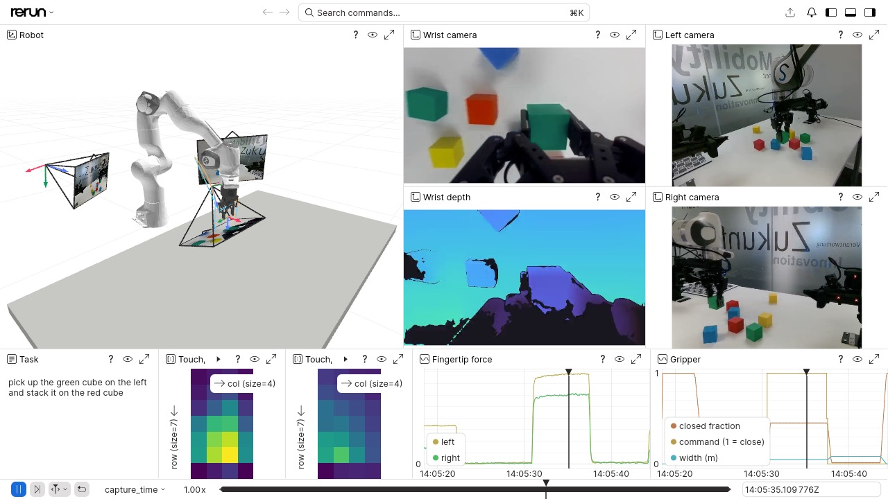

A robot to play with
A Franka arm with a Robotiq gripper and tactile fingertips, some cubes and a watermelon, simulated with MuJoCo in your browser. Leave it alone and it plays by itself.
- Move the mouse to steer the hand
- Click to grab, click again to put down
- Click while moving fast to throw
- Right-drag to look around
- Tap a toy to pick it up
- Tap somewhere else to put it down
And the real one
The same kind of arm on a real table, stacking a green cube on a red one: three cameras, wrist depth, the fingertip touch sensors and the gripper, recorded with Rerun. Scrub the timeline, or drag the 3D view around.

Open it full screen, which is the better way to see it on a phone.